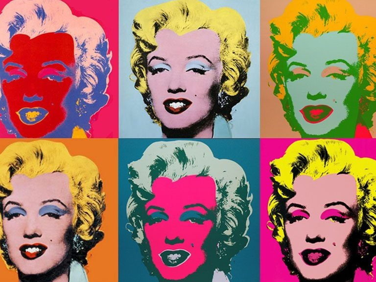

Pop art

Pop art is an art movement that emerged in the United Kingdom and the United States during the mid- to late-1950s.The movement presented a challenge to traditions of fine art by including imagery from popular and mass culture, such as advertising, comic books and mundane cultural objects. One of its aims is to use images of popular (as opposed to elitist) culture in art, emphasizing the banal or kitschy elements of any culture, most often through the use of irony. It is also associated with the artists' use of mechanical means of reproduction or rendering techniques. In pop art, material is sometimes visually removed from its known context, isolated, or combined with unrelated material.
Among the early artists that shaped the pop art movement were Eduardo Paolozzi and Richard Hamilton in Britain, and Larry Rivers, Robert Rauschenberg and Jasper Johns among others in the United States. Pop art is widely interpreted as a reaction to the then-dominant ideas of abstract expressionism, as well as an expansion of those ideas.Due to its utilization of found objects and images, it is similar to Dada. Pop art and minimalism are considered to be art movements that precede postmodern art, or are some of the earliest examples of postmodern art themselves.
Pop art often takes imagery that is currently in use in advertising. Product labeling and logos figure prominently in the imagery chosen by pop artists, seen in the labels of Campbell's Soup Cans, by Andy Warhol. Even the labeling on the outside of a shipping box containing food items for retail has been used as subject matter in pop art, as demonstrated by Warhol's Campbell's Tomato Juice Box, 1964 (pictured).